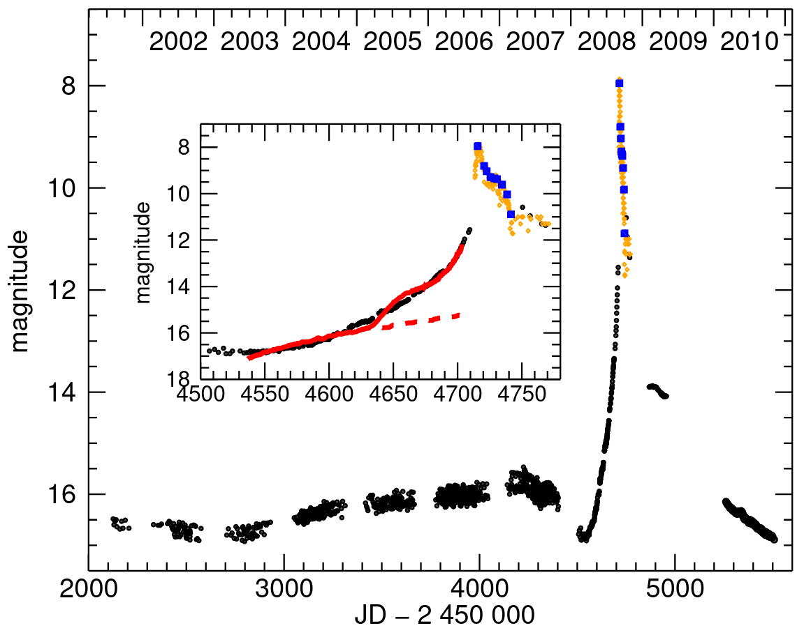
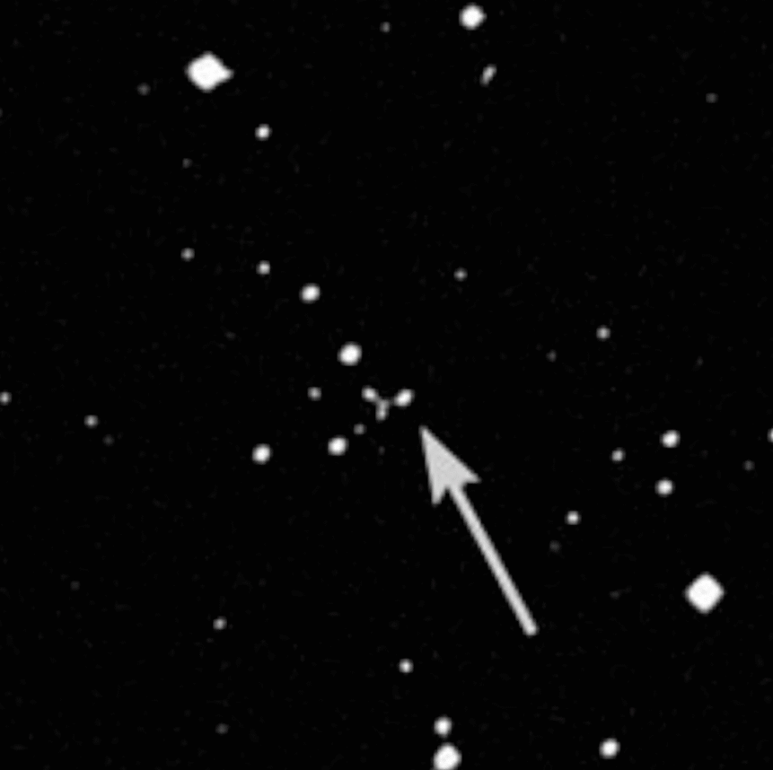
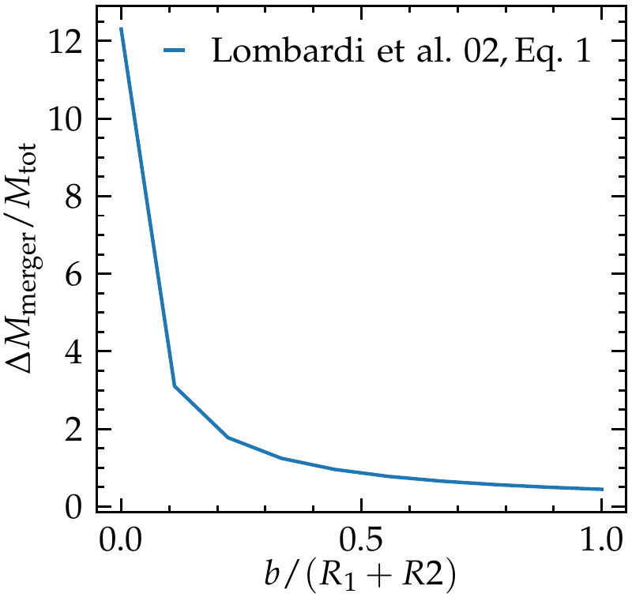
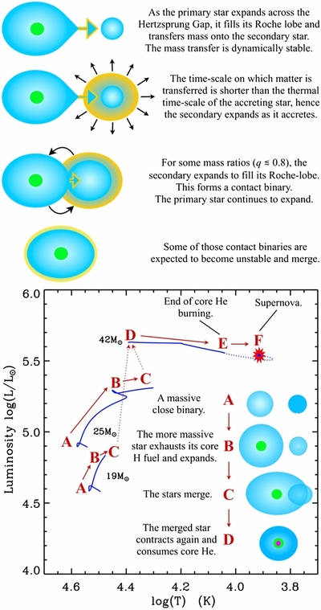

Materials: Webbink 1975, Paczynski 1976, Ivanova et al. 2013, Renzo et al. 2021, Ropke & de Marco 2023, Renzo et al. 2020c, Ivanova et al. 2020.
Dynamically unstable mass-transfer
As stars evolve, their radius tends to increase. We have seen that in a binary system, this can lead the more massive and faster evolving star to fill its Roche lobe and initiate mass transfer.
Depending on the orbital response, mass transfer can be dynamically stable (often only referred to just as Roche lobe overflow RLOF, although the Roche lobe is filled in both cases), or dynamically unstable (often referred to as "common envelope", CE).
N.B.: CE is not the only possible dynamically unstable mass-transfer, for example in a triple system, the secular perturbations on the inner orbit by the third body, plus the evolutionary changes of the stars (radius, wind mass loss, etc.) can lead to dynamical instabilities of the orbit (e.g., Perets & Kratter 2012).

The stability of mass-transfer is an important bifurcation point in the evolution of a binary system, since typically conservation of angular momentum dictates that stable RLOF leads to an overall widening of the binary (assuming the mass-ratio gets reversed during the mass-transfer), while CE leads to a shrinking of the orbit.
N.B.: The details of the orbital evolution depend on the accretion flow, whether it occurs through a disk or a direct impact, how conservative mass-transfer is, and how much angular momentum is carried away by the non-accreted material.
In fact, the original idea of a CE (Webbink 1975, Paczynski 1976) comes from trying to explain cataclismic variables, which are binaries with a main-sequence star and a WD, with orbital separation much smaller than the expected maximum radius of the WD progenitor. It was therefore designed as a process resulting in the decrease of the orbital separation.
Unfortunately, the boundary between the two modes of mass transfer remains elusive, and semi-analytic criteria are still common to decide the outcome in rapid binary population synthesis calculations.
Stability criteria
Soberman et al. 1997 formalized analytically a stability criterion for mass transfer, based on the response of the donor star radius to the change of mass caused by the transfer of mass. Their criterion is still widely adopted.
The defined parameters \(\zeta=d\ln R/d\ln M_{\rm donor}\) with \(R=R_{\rm donor}\) donor radius and \(R=R_{\rm RL,1}\) Roche lobe of the donor. As mass is being transferred, \(M_{\rm donor}\) decreases and its radius changes, at the same time, the redistribution of mass (and angular momentum) in the binary can change the orbit and the size of the Roche lobe of the donor.
If during mass-transfer \(\zeta_{\rm donor} < \zeta_{\rm RL,1}\), then the readjustment of the donor is too "slow" compared to the readjustment of the orbit and this will lead to a dynamical phase: the orbit shrinks faster than the donor star, therefore the amount of Roche lobe overflow increases triggering a runaway process.
However, calculating the \(\zeta\) parameters requires having out-of-thermal equilibrium stellar models and prescribing a rate of mass-transfer. Therefore, it is also common to rephrase this criterion in an equivalent form based on the mass-ratio \(q=M_{\rm accretor}/M_{\rm donor}\): if this mass ratio is more extreme than a certain threshold \(q_{\rm crit}\) then the evolutionary timescales of the two stars will be too different, the donor will try to donate on its timescale, the accretor will not be able to accrete the mass and inflate because of the excess thermal energy in the outer layers, leading anyways to a CE.
N.B.: In practice there can be different values of \(q_{\rm crit}\) for each evolutionary phase of the donor (whether it is a case A mass transfer with a main sequence donor or a later mass transfer changes the donor's envelope structure and thus can influence the dynamical stability!)
These stability criteria are widely used, but also widely debated. In nature there may be more than one way to initiate the common envelope:
- Donor's Roche lobe overflow runaway increase
- The binary loses mass from the L2 Lagrangian point, leading to large angular momentum losses and inspiral
- Accretor's cannot accept mass fast enough and swell until both stars fill their Roche lobe
- Darwin instability: tides try to synchronize the orbit and spin rotations, but if \(M_{2}\ll M_{1}\) they can never provide enough angular momentum to the secondary star. This leads to a runaway transfer of the orbital angular momentum to the stellar spins which drives the binary inward until unstable mass transfer ensues (see Darwin 1880).
Many of these processes occur on a (relatively long) thermal timescale of the donor star, which makes it hard to study directly with numerical simulations and/or observations.
Common envelope evolution

Mass-transfer initiates and it is likely that for order of a thermal timescale, the two object in the binary still remain distinct (see e.g., Blagorodnova et al. 2021 for observational evidence). Modifications to the mass-budget and structures during this phase are often neglected in the study of CE.
If mass transfer does become dynamically unstable, at some point the gas will fill the equipotentials surfaces of the Roche geometry around both stars (those in between L1 and L2 at least). At this point we have either two stellar cores in the shared envelope, or the accretor star entering the envelope of the donor. Even if initially tidally synchronized, these bodies cannot maintain co-rotation with the envelope anymore.
Therefore, the lack or loss of co-rotation (if it was initially present) necessarily leads to friction between the stars and the shared envelope, and causes a dynamical plunge-in. In a matter of few (possibly less than one) orbit, the separation drops dramatically, and the orbital energy released by the plunge in is given to the envelope. The efficiency of this process is still very debated (see below).
During the plunge-in, the quadrupole moment of the binary will be changing with a non-zero second derivative: there should be gravitational wave (GW) emission!
The deposition of orbital energy into the envelope leads to its expansion, decreasing the density and consequently the drag on the inner binary: the plunge in can stall (Meyer & Meyer-Hoffmeister 1975).
If a stalled phase occurs, then the evolutionary timescale will increase from dynamical (during the plunge-in) to thermal: the minimal drag still drives an inspiral but on a long timescale. During this phase (if present), GW emission from the inner binary may reach the LISA band, and if observed, it would passively trace what is occurring inside the shared (and opaque to photons) envelope (Renzo et al. 2021).
N.B.: GW do not drive the inspiral, but trace how it occurs!
At the very end, we expect another dynamical phase that can either:
- result in a stellar merger (e.g., if the donor core fills its Roche lobe within the shared envelope)
- the successful ejection of the shared envelope (interrupting the drag), and the formation of a tight period binary
Direct numerical simulations of CE
Common envelope evolution, since it's theorization in the 1970s by Paczynski, Webbink, Taam, and Ostriker, remains one of the biggest open questions in stellar physics that impacts the formation of all compact binaries and most stellar mergers.
Hydrodynamical simulations (possibly including radiation and/or magnetic fields) of the problem are possible and actively done, but typically they can only capture the plunge-in (dynamical timescale) and the resolution is most of the time insufficient to capture the inner core. In other words, the contrast in time-scales (from thermal to dynamical and possibly back) and spatial scales (from the expanded shared envelope to deep into the core), plus the intervention of several physical ingredients (thermodynamics, atomic physics, hydrodynamics), make the CE problem hard to treat from first principles.
The example below shows the density of a CE simulation with the code FLASH from Landri et al. 2025 ending in a merger.
N.B.: Because of the insufficient spatial resolution in the core, with these simulation we can only say that the pure hydrodynamics does not manage to eject the gas before the companion reaches the central unresolved region.
Energetic considerations for CE outcome
In lack of a viable first-principle approach to CE, we often rely on simple conservation laws arguments to try to map the pre-CE to the post-CE state. This was originally proposed by Webbink 1984 where the infamous parameter \(\alpha_{\rm CE}\) was introduced.
The core idea is to relate a fraction \(\alpha_{\rm CE}\) of the change in orbital energy as the binary spirals in, to the binding energy of the (pre-CE) envelope:
where we implicitly assume that the mass of the envelope to be ejected is \(M_{\rm env} = M_{1} - M_{\rm 1, core}\), that the secondary star \(M_{2}\) does not change mass, and \(a_{i}\), \(a_{f}\) are the pre- and post-CE separation. Thus, \(\alpha_{\rm CE}\) represents the efficiency with which orbital energy of the inner binary is pumped into the gas of the shared envelope.
The binding energy of the envelope is almost always calculated based on the structure of the donor star before the onset of mass transfer (i.e., neglecting modifications introduced in the initial RLOF phase lasting possibly \(\sim{}\tau_{\rm thermal}\)):
where \(\lambda_{CE}\) is a dimensionless parameter that encapsulate the details of the mass distribution in the donor introduced by de Kool 1990. This is usually obtained from stellar evolution models.
Within this framework, for a given donor (i.e., a given \(\lambda_{CE}\), \(M_{1}\) and \(M_{\rm env}\)), accretor, initial separation \(a_{i}\) and assumed "efficiency" \(\alpha_{\rm CE}\), we can solve for the final separation \(a_{f}\). If \(a_{f}\) is such that the core would fill its Roche lobe at the end of the CE, it is often assumed the CE results in a merger. Otherwise, this energy balance argument gives the final post-CE separation.
This simple picture was designed as an order of magnitude argument, but has become a standard algorithmic practice, because the detailed picture remains opaque. However, several issues exist:
- \(\alpha_{\rm CE}>1\) have been invoked to explain systems, while this apparently violates conservation of energy, in reality energy sources other than the orbit may play a role, such as accretion (e.g., if one of the stars is a compact object), recombination of gas, etc.
- The initial conditions are often not well defined: should we consider the moment of the onset of mass transfer, or when the mass transfer becomes dynamical? For simplicity, often the former is assumed.
- The core/envelope boundary (determining \(M_{\rm env}\) and \(\lambda_{CE}\)) is also poorly understood, and possibly sensitive to the evolutionary phase, convective boundary mixing, opacity profiles, etc. Definitions adopted vary from study to study.
- The efficiency of the energy deposition is presently unknown, and this approach neglects the impact of dynamical phenomena during the CE itself that affect the envelope structure.
Finally, a major conceptual problem is that during a CE, the binary is not a closed system: conservation of energy between the gas remaining bound and the ejecta may not apply if losses from the system are significant!
Electromagnetic counterparts: luminous red novae
CE is crucial in the formation of most close-binary systems and thus the vast astrophysical phenomenology that they can produce (double WDs in planetary nebuale, X-ray binaries, to GW, planetary engulfments, etc.): we have many indirect constraints from observing these systems and their pre-CE analogs!
However, the ejection of a CE (and/or the merger) should also produce a transient signal, and we have seen at least a few binaries with measured negative \(\dot{P}\) causing an outburst, named "Luminous red novae". The first and maybe most famous one was V1309Sco for which pre-outburst characterization of a shrinking binary is available:

This Galactic event was a prototypical "Luminous Red Nova" (LRN), a type of transient with intermediate luminosity between "Novae" and "Supernovae" that had been detected but not interpreted before. V1309Sco exhibited the pre-outburst orbital shrinking connecting LRN with dynamically unstable binary interactions.
Another Galactic event occurred among massive stars, V838Mon, which has a nice light-echo image from HST:

The rate of these LRN is also compatible with expectations if this is related to unstable mass-transfer, and is very roughly ∼ 1/decade/Milky-way like galaxy.
The detailed understanding of the LRN light curves, the role of recombination and other non-orbital energy sources, etc. are still actively debated 50 years after the seminal conference proceeding by Paczynski, and determining the final separations for all possible cases (as a function of evolutionary stages of both stars) remains one of the most pressing open problems in stellar astrophysics and time-domain astrophysics.
Stellar mergers are common
Sometimes, dynamically unstable mass-transfer ultimately result in the merger of two stars (if the temporarily shared envelope cannot be ejected). This process is quite common, about 20-40% of massive (\(M_{\rm ZAMS}\ge 7.5M_{☉}\)) binaries will merge, depending on assumptions on the initial orbital distributions and treatment of mass transfer (Renzo et al. 2019b). The zeroth order effect of the presence of more companions in a triple(, quadruple, etc…) is to enhance the number of binary interactions (and thus mergers) compared to a population of binaries (e.g., Kummer et al. 2025).
Merger products can differ significantly from the structure of a star evolving as single. How different may depend on the evolutionary phase of the progenitor binary at the onset of the merger, in other words, whether it was a merger between two main sequence stars, one main sequence and one post-main-sequence, red (super) giant, AGB, or whether compact objects were involved. Exploring the full parameter space is still an ongoing research topic (see e.g., Schneider et al. 2019, Chatzopoulos et al. 2020, Grichener 2025).
Main-sequence + main-sequence mergers
Lombardi 2002, Gleebek et al. 2013 studied the hydrodynamics (no radiation) of head on collisions and mergers driven by dynamics (e.g., in a cluster), and they find that these head-on collisions can eject up to \(\sim12\%\) of the pre-merger total mass.
N.B.: (Close-to) head-on collisions have initial orbital energy \(E>0\) (or equivalently their Keplerian pre-merger orbit are parabolic or hyperbolic). This is fundamentally a different situation than an initially bound binary with \(E<0\) and an elliptic orbit (\(0\le e<1\)).

Schneider et al. 2019 performed the first MHD simulation of a binary merger with initially negative orbital binding energy (with the moving-mesh code AREPO) of a main-sequence + main-sequence stellar merger, and evolved the resulting stellar structure post-merger. The movie below shows the density on the equatorial plane:
A key result from these simulations is that the merger product can be (i) magnetized and (ii) slow rotating.
The magnetic field is seeded by the turbulent energy during the merger process – the amount of turbulent energy converted by dynamos in magnetic energy is large, but it remains unclear whether the configuration can be stable for long terms. This prediction fits well with the observation of only \(\sim10\%\) of OB-type stars exhibiting large magnetic fields which could all be main-sequence + main-sequence merger products (e.g., Donati et al. 2009).
The slow rotation may be more puzzling, since at the beginning of the merger process, there is a lot of orbital angular momentum in the system, which presumably needs to be conserved. Based on this argument, for a long time the merger products were expected to be fast rotating.
However, Schneider et al. found that during the dynamical phase of the merger, the core of the more massive star (which has a higher \(\langle T \rangle\) by the virial theorem and lower \(\rho\) consequently for a given \(P\)), which remains "frozen" on the timescale of the merger. After the merger, on a thermal timescale, the core will adapt to the new increased mass, and the density in the core has to decrease, leading to expansion that "swallows" a large amount of angular momentum from the surface. This together with the angular momentum losses from the ejecta of the merger product leave a post-merger slowly spinning star after it has relaxed for a thermal timescale
Post-main sequence + main sequence
Assuming a flat (or flat in log) initial period distribution of binaries, mergers between a main-sequence (unevolved, initially less massive star) and a post-main sequence (initially more massive and thus more evolved star) should be more common than main-sequence + main-sequence mergers based on the large post-main sequence radial expansion of the stars.
These have also been explored (e.g., Morris & Podsiadlowski 2007, Chatzopoulos et al. 2020) but the parameter space is rather vast, and results from different groups are not always in agreement.
For instance, Chatzopoulos et al. 2020 used their simulations to argue that a main-sequence + RSG merger with tidal disruption of the main-sequence in the RSG envelope results in a "fast" rotating RSG (\(v\sin(i)\sim 5-15\,\mathrm{km s^{-1}}\)) and applied it to Betelgeuse (although see also Ma et al. 2024 on the interpretation of Betelgeuse's \(v\sin(i)\)).
Conversely, the even later merger model of Morris & Podsiadlowski 2007 was designed to explain the circumstellar material and blue progenitor of SN1987A: by focusing on case C (post-He core burning) mergers where the secondary can penetrate in the He core of the donor, they produce a star with a small \(M_{\rm He}/M_{\rm tot}\) that naturally evolves blueward post-merger (see also, e.g., Justham et al. 2014). and circumstellar ejecta that result in the "hourglass" morphology of SN1987A's remnant (see Fig. 4 in the next lecture).

More recently, di Carlo et al. 2020, Renzo et al. 2020c, and Costa et al. 2022 proposed mergers between a main-sequence and an evolved very massive star to create structures that could avoid (pulsational) pair-instability supernovae producing BH remnants forbidden in single star evolution. Ballone et al. 2023 performed hydrodynamical simulations for this scenario: collectively, we have just begun exploring mergers for \(M_{\rm tot}\gtrsim 100\,M_{☉}\) thanks to GW providing new observational insight on the progenitors of the most massive stellar mass BHs.
In conclusion, across the binary parameter space \((M_{1}, M_{2} = q \times M_{1}, P, e, Z, ...)\) there can be a variety of interactions (mass transfer and possibly mergers, that are common and can produce stellar structures impossible for single star evolution. These non-single stellar structure populate observed samples and need to be understood to be able to meaningfully compare stellar evolution theory with observations (photometric, spectroscopic, across wavelength, and in GWs) and a large amount of work is presently ongoing to explore and chart the binary parameter space (+ parameter space of uncertain stellar physics).